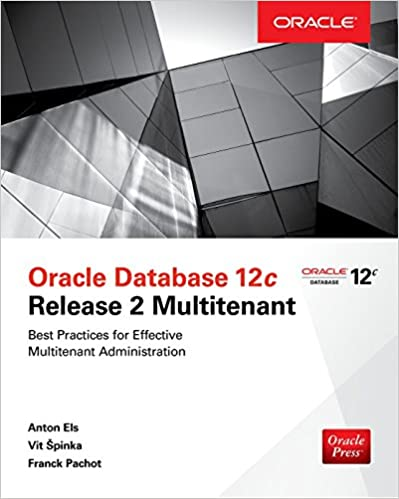

This was first published on https://www.dbi-services.com/blog/oracle-12cr2-multitenant-local-undo/ (2016-11-08)
Republishing here for new followers. The content is related to the versions available at the publication date.
.
Pluggable Databases are supposed to be isolated, containing the whole of user data and metadata. This is the definition of dictionary separation coming with multitenant architecture: only system data and metadata are at CDB level. User data and metadata are in separate tablespaces belonging to the PDB. And this is what makes the unplug/plug available: because PDB tablespaces contain everything, you can transport their datafiles from one CDB to another.
However, if they are so isolated, can you explain why
There is something that is not contained in your PDB but is at CDB level, and which contains user data. The UNDO tablespace is shared:
You cannot flashback a PDB because doing so requires to rollback the ongoing transactions at the time you flashback. Information was in UNDO tablespace at that time, but is not there anymore.
It’s the same idea with Point-In-Time recovery of PDB. You need to restore the UNDO tablespace to get those UNDO records from the Point-In-Time. But you cannot restore it in place because it’s shared with other PDBs that need current information. This is why you need an auxiliary instance for PDBPITR in 12.1
To clone a PDB cannot be done with ongoing transactions because their UNDO is not in the PDB. This is why it can be done only when the PDB is read-only.
In 12.2 you can choose to have one UNDO tablespace per PDB, in local undo mode, which is the default in DBCA:
With local undo PDBs are truly isolated even when opened with ongoing transactions:
Look at the ‘RB segs’ column from RMAN report schema:
[oracle@OPC122 ~]$ rman target /
Recovery Manager: Release 12.2.0.1.0 - Production on Tue Nov 8 18:53:46 2016
Copyright (c) 1982, 2016, Oracle and/or its affiliates. All rights reserved.
connected to target database: CDB1 (DBID=901060295)
RMAN> report schema;
using target database control file instead of recovery catalog
Report of database schema for database with db_unique_name CDB1
List of Permanent Datafiles
===========================
File Size(MB) Tablespace RB segs Datafile Name
---- -------- -------------------- ------- ------------------------
1 880 SYSTEM YES /u02/app/oracle/oradata/CDB1/system01.dbf
3 710 SYSAUX NO /u02/app/oracle/oradata/CDB1/sysaux01.dbf
4 215 UNDOTBS1 YES /u02/app/oracle/oradata/CDB1/undotbs01.dbf
5 270 PDB$SEED:SYSTEM NO /u02/app/oracle/oradata/CDB1/pdbseed/system01.dbf
6 560 PDB$SEED:SYSAUX NO /u02/app/oracle/oradata/CDB1/pdbseed/sysaux01.dbf
7 5 USERS NO /u02/app/oracle/oradata/CDB1/users01.dbf
8 180 PDB$SEED:UNDOTBS1 NO /u02/app/oracle/oradata/CDB1/pdbseed/undotbs01.dbf
9 270 PDB1:SYSTEM YES /u02/app/oracle/oradata/CDB1/PDB1/system01.dbf
10 590 PDB1:SYSAUX NO /u02/app/oracle/oradata/CDB1/PDB1/sysaux01.dbf
11 180 PDB1:UNDOTBS1 YES /u02/app/oracle/oradata/CDB1/PDB1/undotbs01.dbf
12 5 PDB1:USERS NO /u02/app/oracle/oradata/CDB1/PDB1/users01.dbf
List of Temporary Files
=======================
File Size(MB) Tablespace Maxsize(MB) Tempfile Name
---- -------- -------------------- ----------- --------------------
1 33 TEMP 32767 /u04/app/oracle/oradata/temp/temp01.dbf
2 64 PDB$SEED:TEMP 32767 /u04/app/oracle/oradata/temp/temp012016-10-04_11-34-07-330-AM.dbf
3 100 PDB1:TEMP 100 /u04/app/oracle/oradata/CDB1/PDB1/temp012016-10-04_11-34-07-330-AM.dbf
You have an UNDO tablespace in ROOT, in PDB$SEED and in each user PDB.
If you have a database in shared undo mode, you can move to local undo mode while in ‘startup migrate’. PDBs when opened will have an UNDO tablespace created. You can also create an UNDO tablespace in PDB$SEED.
Yes, in 12.2, you can open the PDB$SEED read/write for this purpose:
18:55:59 SQL> alter pluggable database PDB$SEED open read write force;
Pluggable database altered.
18:56:18 SQL> show pdbs;
CON_ID CON_NAME OPEN MODE RESTRICTED
---------- ------------------------------ ---------- ----------
2 PDB$SEED READ WRITE NO
3 PDB1 READ WRITE NO
18:56:23 SQL> alter pluggable database PDB$SEED open read only force;
Pluggable database altered.
But remember this is only allowed for local undo migration.
The recommandation is to run in local undo mode, even in Single-Tenant.
More about it in the 12cR2 Multitenant book: 
{kind=link}
{kind=link}
{kind=link}